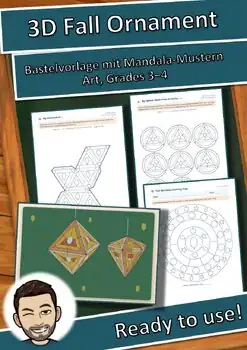

3D Fall Ornament Craft Templates & Activities | Grades 3–4
Turn a flat sheet of paper into a colorful 3D fall decoration! Students color autumn-themed mandala patterns, cut out a precise template, fold, and glue it to create an octahedron, diamond-shaped double pyramid, or paper sphere. Along the way, they practice careful craftsmanship and explore geometric features such as faces, edges, and vertices.
This fall craft is designed for Grades 3–4 and works well for art, seasonal centers, geometry connections, early finishers, or a creative fall classroom display. Plan approximately 90 minutes for the main craft activity.
WHAT'S INCLUDED — 13 PDF pages + cover
- Teacher Notes with suggested lesson sequence, differentiation, copying guide, and standards connections
- Project overview with a finished example
- 6-step visual craft directions with a clear key for cutting, folding, and glue tabs
- 4 printable craft templates: octahedron, diamond/double pyramid, sphere made from 8 circles, and a blank octahedron for students to design
- “Fall Leaves in the Park” reading passage with 3 levels of activities: true/false, comprehension questions, and a short cinquain poem
- Color-by-answer activities in 3 levels for early finishers: numbers to 100, multiplication, and division
- Fall mandala coloring page with a counting activity
- Answer keys
DIFFERENTIATION
★ Level 1: Octahedron with large coloring spaces and a bold cutting line
★★ Level 2: Diamond-shaped double pyramid with a detailed mandala pattern
★★★ Level 3: Sphere made from 8 circles with finer patterns OR an open-ended octahedron for students to create their own design
LEARNING GOALS
Students can:
- Follow visual directions to cut, fold, assemble, and present a 3D paper artwork.
- Use color, pattern, and personal design choices in a seasonal art project.
- Develop fine-motor skills and careful craftsmanship.
- Observe and discuss geometric features, including faces, edges, vertices, and shape attributes.
- Practice grade-appropriate multiplication, division, and number skills through optional extension activities.
- Read a short fall-themed text and respond to comprehension and creative-writing tasks.
STANDARDS CONNECTIONS
National Core Arts Standards — Visual Arts: VA:Cr1 (generating and developing artistic ideas), VA:Cr2 (organizing and developing artistic work), and VA:Pr5 (preparing artwork for presentation).
Common Core Mathematics: connections to 3.G and 4.G through reasoning about shapes and their attributes, plus 3.OA and 4.OA through the optional multiplicat